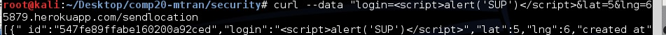
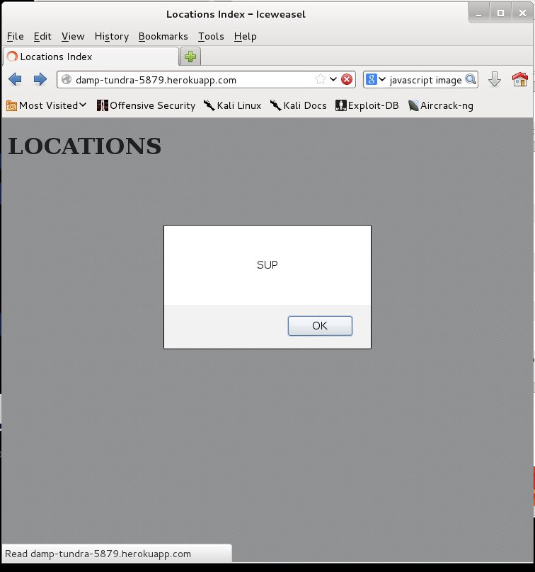
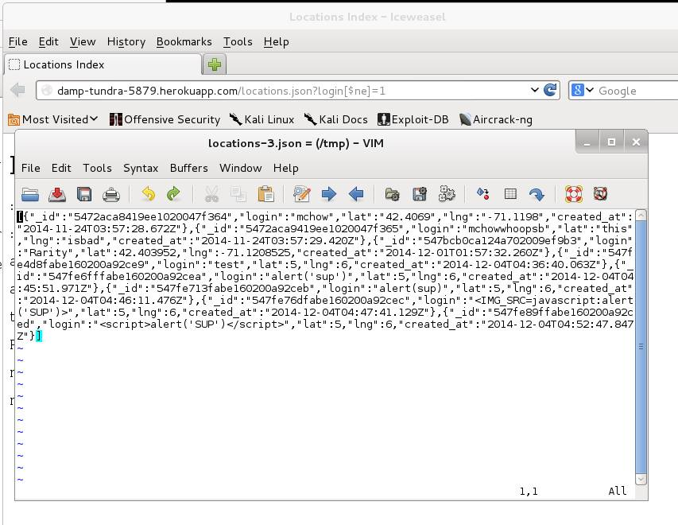

Security Report -Where In The World
Introduction
This is an assessment of the "Where In The World" and "MMAP" web applications. The objective of this report is to find and detail vulnerabilities found. The "Where in the World" web application relies on MongoDB to register the location check-ins of users. The API includes methods which accept new database entries, return the collection of documents, return redline JSON data, and accept querires for single users. The MMAP web application functions to read a users location and post to the "Where in the World" application.
Methodology
First, the web application was analyzed by simply testing out certain attacks and inputs on the application running on the heroku server. I mainly tested using common known vulnerabilities of XSS and SQL injection in MongoDB. After this was done, a code analysis done was by manually going over the source code. The application was relatively small so this was a reasonablke option.
Abstract of Findings
The security issues identified largely come from the lack of user input filtering. The web application readily accepts user input and data without scrubbing or the escaping of special characters. This allows users to easily inject scripts and malicious input. This unsanitized input can have catastrophic effects on the database. As shown in the section below the application is open to a variety of attacks which allow attackers to access and edit the database content that is not meant to be seen or touched.
Issues Found
Cross Site Scripting:
- Location: /sendLocation
- Severity: HIGH This is a extremely severe vulnerability. It allows attackers to input any type of script which is then propogated to all other users who access the database.
- Description:The /sendLocation POST method is susceptible to Cross Site Scripting. Javascript using curl commands such as this.

- Proof of Vulnerability: The XSS is evidenced by the javascript alert box popup window

- Resolution: Escape the special characters that have no business being in a username or latitude or longitude. The lat lng problem should not be a problem as those inputs should be converted to floats before being stored in the database, but the special characters that could initiate a script must be escaped. Specifically escape instances of "<"
The x-xss-protection header should be included in this method. This would also help mitigate XSS.
NoSQL Injection:
- Location: /locations.json
- Severity: HIGH This is a severe vulnerability. NoSQL injection allows attackers to sppof their identity as shown below. This allows them to access otherwise restricted and potentially confidential information. Having access to such information can allow them to tamber with the database itself.
- Description: In the locations required query a "[$ne]" tag was simply injected with the number 1. The web application then returned the JSON information of all users not named "1". As no such user existed all the JSON data was returned. Though the severity of this particular injection is not greatly catastrophic as all the data is accessible through the "/" index regardless, this reveals a severe flaw in the lack of special character handling for the MongoDB queries.
- Proof of Vulnerability:

- Resolution: All query strings should be handled as potentially dangerous. A solution to this problem would be to validate the queries. To do this you must ensure that the variables inputted are properly typed before being passed to the MongoDB fucntions. An example is included below.
$collection->find(array
"login" => (string)$_GET['login']
));
Insufficient Anti-Automation:
No Access Control :
- Location: /, /sendLocation, /locations, /redline.
- Severity: Medium
- Description: The application allows anyone and anything to make requests and receive responses. This means that access to the application is never denied, it is always authrorized. Any and all users have access to the same data and use it in the same way. This is a dangerous vulnerability as it is unlikely that all users should share functionality. All users should not have access to every other users data.
- Proof of Vulnerability: Examining the server.js source code revealed that the appllication did indeed have this vulnerability. This is easily seen by the use of the wildcard character '*'. The offending code is shown below.
response.header("Access-Control-Allow-Origin", "*");
response.header("Access-Control-Allow-Headers", "X-Requested-With");
- Resolution: If necessary change the application to allow methods to be used by only specific origins. For example the response header can be changed to only allow location input from the MMAP web app. This would also prevent the invalid lat and lng data inputed by curl. i.e. values of 99999999.
response.header("Access-Control-Allow-Origin", "http://tuftsdev.github.io/*");
Conclusion
As shown above, this web application is riddled with security flaws. The cause of these vulnerabilities is the belief that users do not have malicious intent. Because of this, input is not sanitized, and all input is assumed correct. This allows for security issues such as XSS, NoSQL injection, DDoS, and Access Control issues. To mitigate the effects of such vulnerabilities, precautions should be taken. These precautions have been outlined above. Most of these resolutions are easy and simple to implement depending on the desired use of this web application.
The cost of such a fix would be roughly $500, including this security analysis. This is a relatively small web application without extensive functionality to consider. After such an evaluation and resolution of these major security vulnerabilities, this web application would be much more reasonable and functional to deploy. As it stands this application has no defense against any potential attackers.